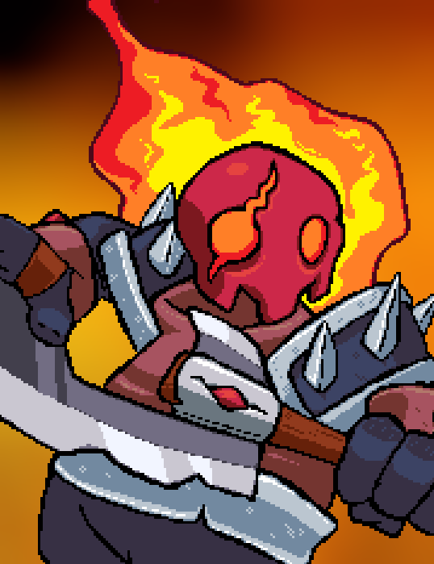
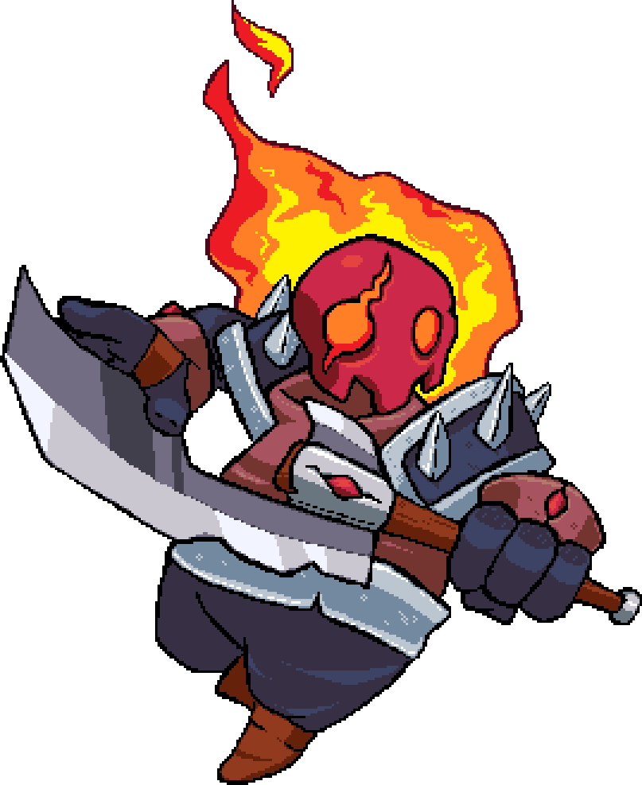
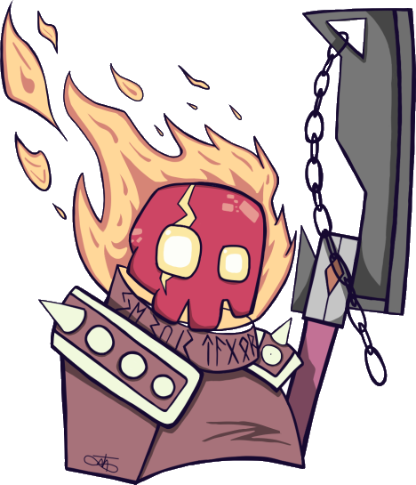
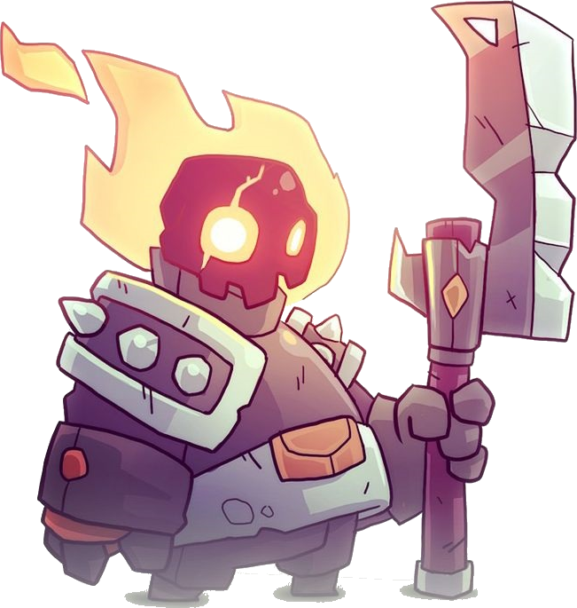

Les gros dossiers
Talgor
Arme sans guerre, serviteur sans maître

Arme d'une civilisation effacée par le temps, Talgor est l’une des dernières reliques d’une Guerre antique. Un Golem de Guerre sans maître ni âme ayant erré sans but au fil des âges alors qu'un semblant de volonté propre commence à émerger dans son esprit.
Personnalité
Créature artificielle, Talgor a pour seul et unique but de servir la ou les personnes qu'il identifie comme "Maîtres". En l'absence de ceux-ci, il porte assistance à quelconque créature en ressent le besoin.
Talgor est passé entre les mains de nombreux maîtres au cours des millénaires, acquérant des expériences et connaissances tout au long de sa longue existence. Malgré sa nature, Talgor a aujourd'hui développé un semblant de conscience : il est d’un naturel très simple et curieux, capable une minute de suivre un papillon et l’autre de décapiter un bandit sans merci.
Il parle peu, mais ouvre chaque conversation de la même manière, quel que soit son interlocuteur ou le contexte : “Bonjour. Je suis Talgor.”.
N'ayant pas été créé à des buts autres que la destruction, Talgor ne fait aucune différence morale ou identitaire entre les créatures conscientes ou non. Il agira de la même manière en approchant un enfant, un puissant sorcier, un chien, ou l'empereur d'une nation.
Apparence
Talgor est une créature massive dont l'apparence large et haute le fait surplomber interlocuteurs et ennemis tel un arbre centenaire regardant un jeune chiot. Chacun de ses mouvements est calculé au millimètre près, chaque micro geste est intentionnel. Conçu pour des situations de combats difficiles, il peut évoluer en terrains accidentés avec aisance. Il marche cependant lentement et cause des difficultés à son entourage dans des lieux peuplés ou étroits.
De par sa nature de Golem de Guerre, Talgor est une entité composée de trois éléments :
- Un crâne entouré de flammes magiques, pouvant librement se détacher et voler dans une direction voulue.
- L'armure, pouvant travailler indépendamment de son crâne. Des runes antiques gravées sur col (souvent mésinterprétées comme des runes de protection) se traduisent simplement par "Je suis Talgor" dans une langue aujourd’hui disparue.
- Un sceau magique, peint dans l'armure elle-même au niveau du bassin. Il s'agit de l'essence même de Talgor, son cerveau, ainsi que l'ancre de son âme naissante et de sa conscience.
Galerie



Note de l’auteur
Un de mes premiers OCs, Talgor provient à l'origine d'une campagne de jeu de rôle où mon groupe était supposé jouer les antagonistes. Je voulais un personnage simple capable d'être les muscles du groupe, avec un système moral neutre au possible. Le personnage m'a beaucoup plu, et m'a suivi jusqu'à aujourd'hui.
L'apparence originelle de Talgor (de laquelle découle tout son personnage) est accidentellement "volée"... J'utilisais une illustration (trouvée en ligne en tapant "character design" dans le moteur de recherche) que j'aimais bien comme photo de profil durant un temps, et je voulais jouer ce personnage dans une campagne.